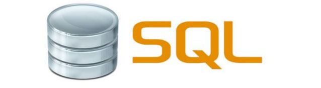
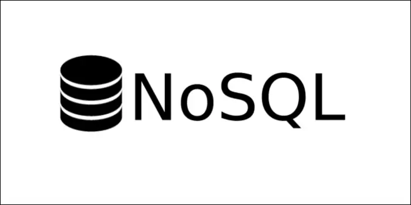

What is SQL?
SQL Databases appear to be the main types of databases out in the industy.
SQL is a domain-specific language used in programming and designed for managing data held in a relational database management system, or for stream processing in a relational data stream management system.
SQL stands for Structured Query Language. A query language is a kind of programming language that's designed to facilitate retrieving specific information from databases.
However, it also comes with the drawbacks of Complex interface, high cost, and only partial control.
What is NoSQL?
However, there is also a second type of databases that is almost just as common as SQL, this being NoSQL.
A NoSQL database provides a mechanism for storage and retrieval of data that is modeled in means other than the tabular relations used in relational databases.
NoSQL is increasingly gaining popularity as it is being employed in big data and real-time applications. Their data structures are completely different from those of relational databases.
NoSQL is an alternative to conventional relational databases in which data is put in tables and the data structure is carefully designed before the database is created. It is mainly helpful for working with huge sets of distributed data. NoSQL databases are scalable, high performant and flexible in nature.
Some downsides of NoSQL Databases are they come at the price, haven't been around for a long time so they might have some annoying bugs, poor documentation or unexpected behavior, NoSQL also lacks standardization and support beacuse of its small compared to SQL community.
What are some other databases?
There is always more options then just these two. Another type of database is a Graph Database (GDB). GBDs is a database that uses graph structures for semantic queries with nodes, edges, and properties to represent and store data. The graph relates the data items in the store to a collection of nodes and edges, the edges representing the relationships between the nodes.
The relationships allow data in the store to be linked together directly and, in many cases, retrieved with one operation. Graph databases hold the relationships between data as a priority. Querying relationships is fast because they are perpetually stored in the database.
Graph databases are a type of NoSQL database, created to address the limitations of relational databases.
However, a Graph Database can have some drawbacks like the restrictions of haveing to use an API, or Many lack native implementations for different platforms.
In the end, what database to use depends on your skills and preferences, also what other types of technologies you are planing on using with it.